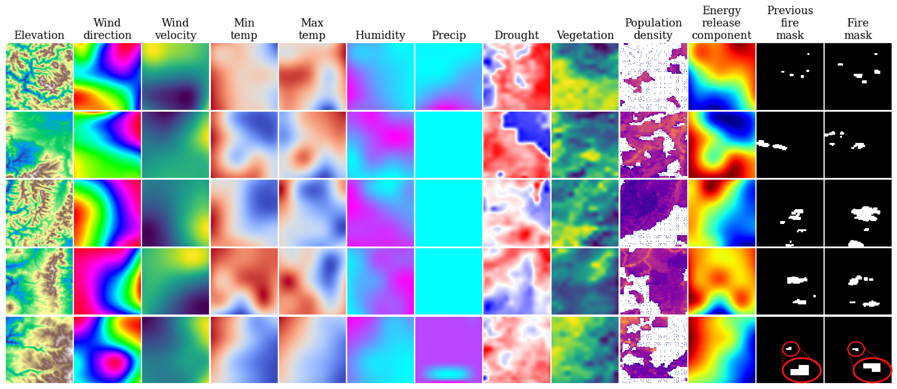
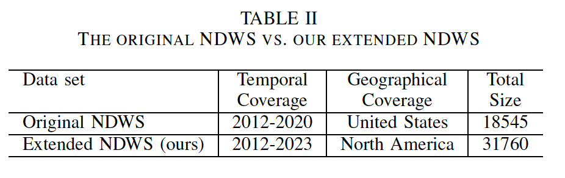

The Next Day Wildfire Spread dataset was developed by Google research as a benchmark largescale dataset for developing wildfire propagation machine learning models based on remote sensing data. The dataset contains 18454 fire samples in the contiguous United States from 2012 to 2020. It contains 2D information about 12 relevant variables including vegetation, elevation, weather, fire map at t day and fire mask at t+1 day. The dataset is publicly available here.
Due to the drastic increase in number and frequency of wildfires in the last few years, to augment the dataset, we will be using the same 12 variables as the original dataset, but we will be using data from 2012 to 2023, and we will be expanding the area of interest to the entire North America. This will allow us to train a model that can generalize to a more recent time period and a larger area, which will be more useful for real-world applications in the context of this project.

The figure above shows a sample of the data. The first row shows the 12 variables used in the dataset, and the second row shows the fire mask at t+1 day. The fire mask is a binary mask that indicates whether a pixel is on fire or not. The fire mask is the target variable that we will be predicting.
